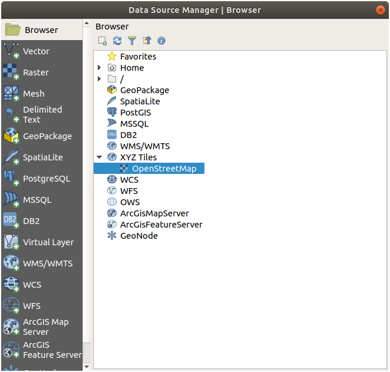
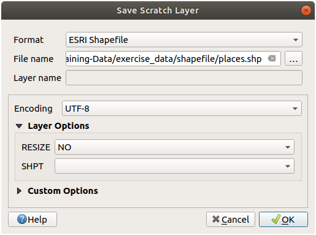
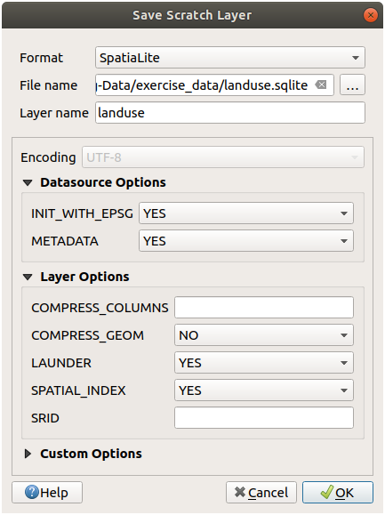

重要
翻訳は あなたが参加できる コミュニティの取り組みです。このページは現在 100.00% 翻訳されています。
20. 練習データを準備する
重要
このプロセスは講座の召集者、または、その講座のためにローカライズしたサンプル・データセットを作りたい経験豊富なQGISユーザ向けにしました。デフォルトのデータセットはトレーニングマニュアルとともに提供されていますが、この手順に従ってそれを置き換えることができます。
提供されているサンプルデータ はトレーニングマニュアルと一緒に Swellendam とその周辺の町を指します。 Swellendam は南アフリカの西ケープ州ケープタウンの約2時間の東に位置しています。データセットは英語とアフリカーンス語の両方で地物名を含みます。
このデータセットは誰でも問題なく使うことができますが、自分の国や故郷のデータを使うことを好む方もいるかもしれません。それを選択した場合は、ローカライズされたデータが、モジュール3からモジュール7.2のすべてのレッスンで使用されます。それ以降のモジュールはより複雑なデータソースを使用しているので、あなたの地域で利用できる場合もできない場合もあります。
注釈
以下の手順では、QGISの十分な知識を持っており、教材として使用されることを意図していないと仮定します。
20.1. OSMを基にしたベクタファイルを作る
デフォルトのデータセットをコースのためのローカライズされたデータに置き換えたい場合、QGISに組み込まれたツールを使って簡単に行うことができます。あなたが使おうとする領域は、都市部と農村部の適当な混合地であり、河川や水面、道路、地域の境界(自然保護区や農場など)などが分かれてる必要があります。
QGISプロジェクトを開く
を選択し、 データソースマネージャ ダイアログを開きます。
ブラウザ タブで、 XYZ Tiles ドロップダウンメニューを展開し、 OpenStreetMap アイテムをダブルクリックします。
 マップキャンバスに世界の地図が表示されるようになります。
データソースマネージャ ダイアログを閉じます
学習エリアとして使用したいエリアに移動します

{kind=link}
データを抽出する領域ができたので、抽出ツールを有効にしましょう。
に移動します
すべて タブで、検索ボックスに
QuickOSMと入力しますQuickOSMプラグインを選択し、 インストール を押し、ダイアログを 閉じる します。

メニューから、新しいプラグインを実行します
Quick query タブで、 Key ドロップダウンメニューから
buildingを選択しますValue フィールドを空にして、すべてのビルに問い合わせることを意味します。
次のドロップダウンメニューで Canvas Extent を選択します
下の Advanced グループを展開し、 Multipolygons を除く右側のすべてのジオメトリタイプのチェックを外します。
Run query を押します

新しい
buildingレイヤが レイヤ パネルに追加され、選択した範囲の建物が表示されます。他のデータを抽出するため、上記と同様に行います：
Key = landuseとジオメトリ型Multipolygons。Key = boundary、Value = protected_areaとジオメトリ型Multipolygons。Key = natural,Value = waterとジオメトリ型Multipolygons。Key = highwayとジオメトリ型LinesとMultilinesをチェックする。Key = waterway、Value = riverとジオメトリ型LinesとMultilinesをチェックする。Key = placeとジオメトリ型Points。
このプロセスにより、レイヤーが一時ファイルとして追加されます（名前の横にある  アイコンで示されます）。
アイコンで示されます）。
あなたの地域に含まれるデータをサンプリングして、あなたの地域でどのような結果が得られるかを確認できます。
講座で使用するために、結果のデータを保存する必要があります。データに応じて、ESRIシェープファイル、GeoPackage、SpatiaLite形式を使用します。
place 一時レイヤを他の形式に変換するには:
place レイヤーの横にある
アイコンをクリックして、 スクラッチレイヤを保存 ダイアログを開きます。注釈
一時レイヤーのプロパティ（CRS、範囲、フィールドなど）のいずれかを変更する必要がある場合は、代わりに コンテキストメニューを使用し、を確認してください。 保存したファイルを地図に追加する オプションがチェックされています。これにより、新しいレイヤーが追加されます。
ESRIシェープファイル 形式を選択します。
... ボタンを使用して
exercise_data/shapefile/フォルダを参照し、ファイルをplaces.shpとして保存します。 OK を押します
レイヤー パネルで、一時的な place レイヤーが保存された places シェープファイルレイヤーに置き換えられ、その横にある一時的なアイコンが削除されます。
レイヤーをダブルクリックして タブを開き、 レイヤ名 プロパティをファイル名と一致するように更新します。
他のレイヤーに対してこのプロセスを繰り返し、次のように名前を変更します：
natural_waterをwaterwaterway_riverをriversboundary_protected_areaをprotected_areas
各結果データセットは、
exercise_data/shapefile/ディレクトリに保存する必要があります。
次のステップは、コース中に使用する 建物 レイヤーからGeoPackageファイルを作成することです。
building レイヤの隣にある
アイコンをクリックしますGeoPackage 形式を選びます
ファイルを
training_data.gpkgとしてexercise_data/フォルダの下に保存しますレイヤ名 がデフォルトのファイル名として記入されます。それを
buildingsに置き換えます。
OK を押します
レイヤのプロパティダイアログで名前を変更します
このプロセスを highway レイヤで繰り返し、それを
roadsとして同じGeoPackageデータベースに保存します。
最後のステップは、残りの一時ファイルをSpatiaLiteファイルとして保存することです。
landuse レイヤの隣にある
アイコンをクリックしますSpatiaLite 形式を選択します
そのファイルを
exercise_data/フォルダの下にlanduse.sqliteとして保存します。デフォルトでは、 レイヤー名 がファイル名として入力されます。変更しないでください。 OK を押します
これで、次のような地図が作成されます（レイヤーが地図に追加されると、QGISがランダムに色を割り当てるため、シンボルは確かに大きく異なります）：

重要なことは、上に示したものと一致する7つのベクターレイヤーがあり、それらすべてのレイヤーにいくつかのデータがあることです。
20.2. SRTM DEM tiffファイルを作る
モジュール モジュール: ベクタデータを作る および モジュール: ラスタ の場合、講座用に選択した地域をカバーするラスターイメージ（SRTM DEM）も必要です。
CGIAR-CGI は、 https://srtm.csi.cgiar.org/srtmdata/ からダウンロードできるSRTMDEMを提供します。
使用することを選択した地域全体をカバーする画像が必要になります。範囲座標を見つけるには、QGISで  最大のレイヤーの範囲にズームし、ステータスバーの
最大のレイヤーの範囲にズームし、ステータスバーの  範囲 ボックスの値を選択します。
範囲 ボックスの値を選択します。 GeoTiff 形式のままにします。フォームに入力したら、 ここをクリックして検索を開始>> ボタンをクリックし、ファイルをダウンロードします。
必要なファイルをダウンロードしたら、それらを raster/SRTM サブフォルダの下の exercise_data ディレクトリに保存する必要があります。
20.3. 画像のtiffファイルを作る
モジュール モジュール: ベクタデータを作る で、 ★☆☆ （初級レベル） 理解しよう: データソース レッスンは、生徒がデジタイズするように求められる3つの学校の運動場のクローズアップ画像を示します。したがって、新しいSRTMDEMtiffファイルを使用してこれらの画像を再現する必要があります。学校の運動場を使用する義務はありません。3つの学校の土地利用タイプを使用できます（たとえば、異なる学校の建物、遊び場、駐車場）。
参考までに、その例題データの画像はこれです:

20.4. トークンを置き換える
ローカライズされたデータセットを作成したら、最後に substitutions.txt ファイル内のトークンを置き換えて、ローカライズ版トレーニングマニュアルに適切な名前が表示されるようにします。
置き換える必要のあるトークンは次のとおりです:
majorUrbanName：これはデフォルトで「スウェレンダム」になります。お住まいの地域の主要な町の名前に置き換えてください。schoolAreaType1：これはデフォルトで「陸上競技場」になります。お住まいの地域で最大の学校エリアタイプの名前に置き換えてください。largeLandUseArea：これはデフォルトで「ボンテボック国立公園」になります。お住まいの地域の大きな土地利用ポリゴンの名前に置き換えてください。srtmFileName：これはデフォルトでsrtm_41_19.tifになります。これをSRTMDEMファイルのファイル名に置き換えます。localCRS：これはデフォルトでWGS 84 / UTM34Sになります。これをお住まいの地域の正しいCRSに置き換える必要があります。